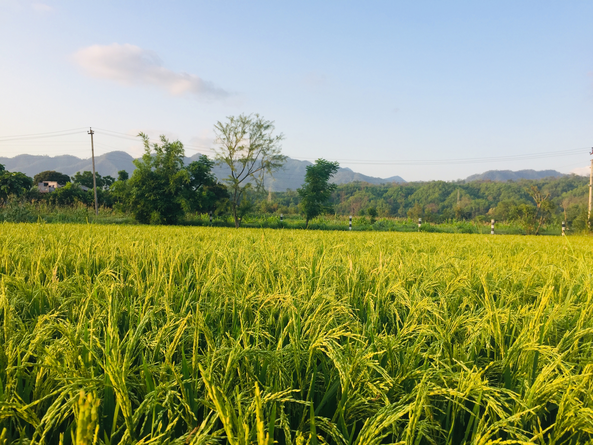

01
Seeds & planting
Seeds and planting materials, with guidance on choosing and sowing for your farm.

The right inputs. Practical advice. A partner who understands your farm from the first seed to a healthier harvest.
Explore what we offer ↗At Sumit Amit Agrovet, we bring agricultural inputs, livestock care products, and practical farm support together under one roof. Based in Inaruwa, Sunsari, we help farmers make informed choices for their crops, animals, and land.
Everyday essentials.
Thoughtful guidance.
Seeds and planting materials, with guidance on choosing and sowing for your farm.
Fertilizers and farm inputs, supported by advice on when and how to use them.
Products and practical support for managing weeds, pests, and crop diseases.
Livestock medicines, related products, and support for your animal husbandry needs.
Every field is different. Our agricultural advisory and field visits connect what your farm needs with practical next steps.
Talk to us about your farm ↗Help identifying crop symptoms, pest concerns, and field conditions.
Guidance on suitable inputs, seed selection, and fertilizer timing.
Field visits and practical farm support grounded in your growing conditions.
Inaruwa, Sunsari, Nepal
Visit us to discuss agricultural inputs, livestock products, or support for your farm.